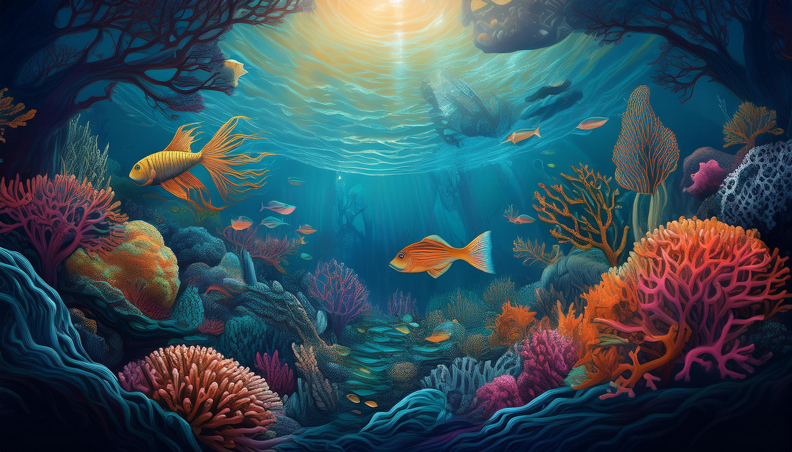
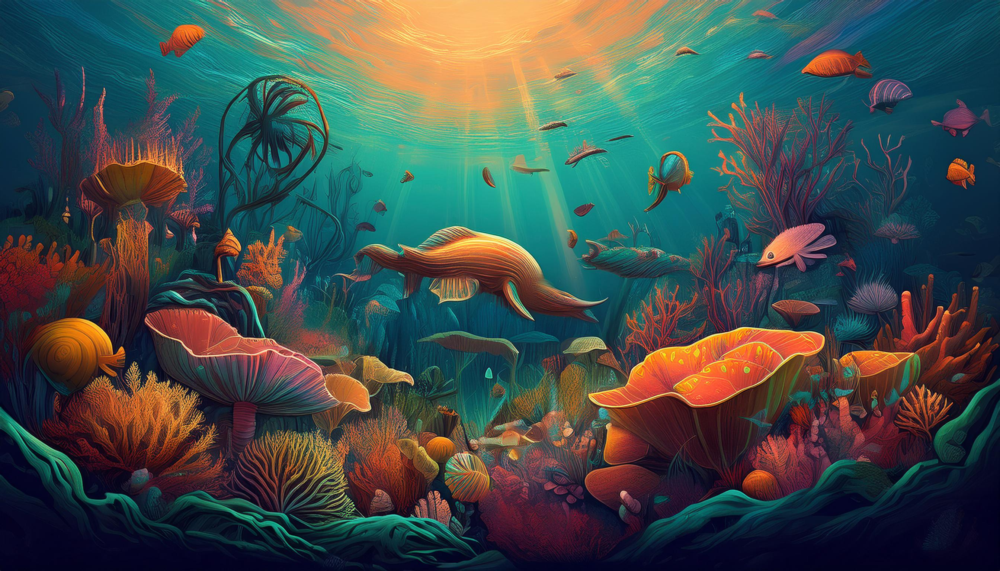
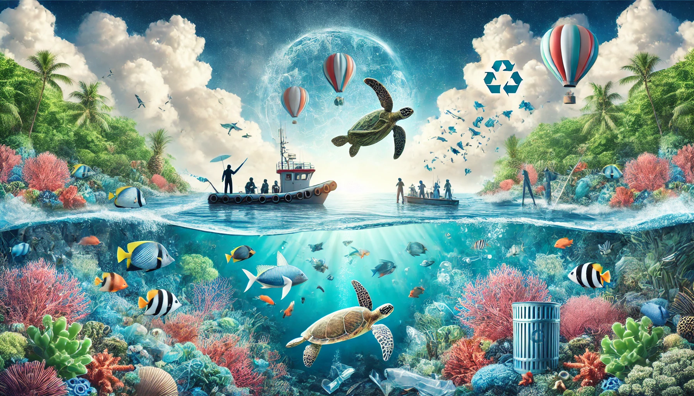

Introduction
Healthy oceans are critical to sustaining life on Earth. They cover
70% of our planet and we rely on them for food, energy and water. Yet,
we have managed to do tremendous damage to these precious resources.
Today, our oceans face growing threats from pollution, overfishing,
habitat destruction, and climate change. Plastic waste contaminates
marine environments, endangering wildlife, while rising ocean
temperatures and acidification threaten coral reefs and coastal
communities. Unregulated fishing practices have depleted fish
populations, disrupting the delicate balance of marine ecosystems.
The good news is that we are still not too late to make a change.
Through conservation efforts, sustainable policies, and
community-driven initiatives, we can reverse some of the damage and
ensure the long-term health of our marine ecosystems.
organizations such as the United Nations have launched numerous global
programs to safeguard the oceans. These initiatives involve
governments, scientists, and volunteers, working together to combat
pollution, promote sustainable fishing, expand marine protected areas,
and raise awareness about ocean conservation.

Sustainable Fishing

Reducing Ocean Pollution Through Conservation Efforts

Marine Protected Areas and Habitat Conservation

Conclusion
Conservation and sustainability are essential for protecting our
oceans and marine ecosystems. By implementing sustainable fishing
practices, reducing ocean pollution, and establishing marine protected
areas, we can safeguard aquatic biodiversity and ensure the health of
our oceans for future generations. It is crucial that individuals,
communities, and governments work together to address the threats
facing our oceans and take action to preserve these vital resources.
Through education, advocacy, and conservation efforts, we can create a
more sustainable future where life below water thrives.
If you are looking for volunteer opportunities, please visit our
Volunteer page.
